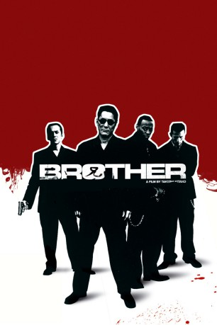
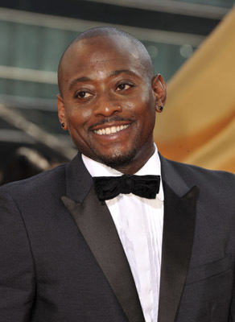
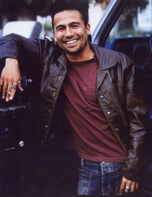
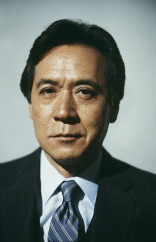
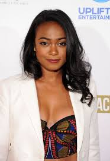
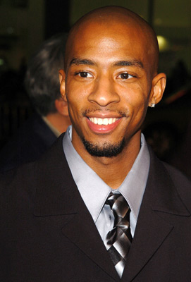
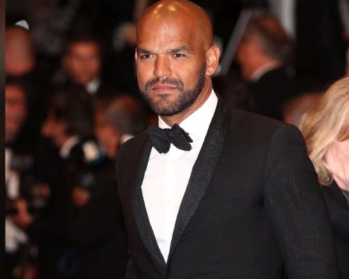
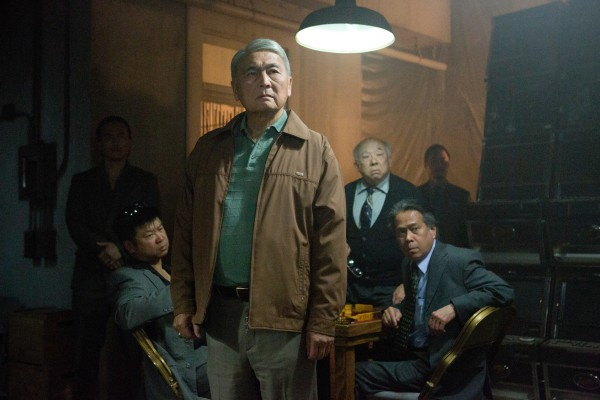
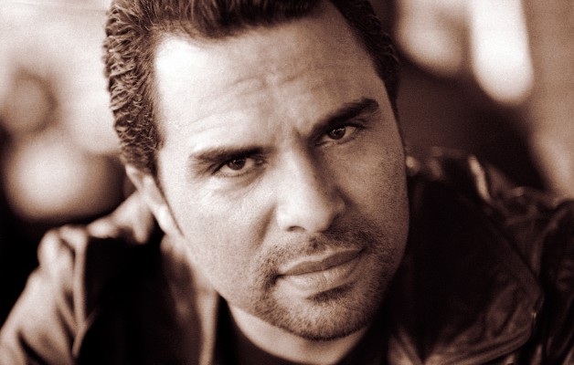
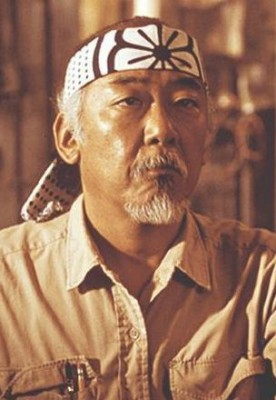

#6464 Brother
 
 IMDB-Wertung: 7.2 / 10
IMDB-Wertung: 7.2 / 10  Metascore: 0
Metascore: 0 
Ausgestoßen durch die Bruderschaft seines Yakuza-Clans wird der eiskalte Killer Yamamoto gezwungen, Tokio Richtung Los Angeles zu verlassen. Dort angekommen findet er sich selbst sehr schnell in der alten Routine seines gewalttätigen Tokio Leben wieder. In kürzester Zeit formt er eine neue skrupellos operierende Bruderschaft um sich herum. Macht, Mädchen und Geld liegen im zu Füssen. Aber das ist dem ehemaligen Yakuza Killer Yamamoto nicht genug. Er will alles! Er startet einen blutigen und erbitterten Kampf gegen die Mafia und muss wieder einmal feststellen, dass er von seinen Brüdern verraten wird.
Jahr: 2000
Dauer: 113 Minuten
FSK: 18
Land: USA Studio: Sony Pictures ClassicsTonspuren: DTS - ,
Untertitel: Deutsch, Englisch,
Auflösung: 1080p (1920x1040) Größe: 13414 MB
Genre: Thriller, Drama, Krimi
Regisseur:  Takeshi Kitano
Takeshi Kitano
Drehbuch: Takeshi Kitano
Soundtrack:
Darsteller:
 Takeshi Kitano als Aniki Yamamoto
Takeshi Kitano als Aniki Yamamoto-  Omar Epps als Denny
-  Lombardo Boyar als Mo
 Ryo Ishibashi als Ishihara
Ryo Ishibashi als Ishihara-  James Shigeta als Sugimoto
-  Tatyana Ali als Latifa
- Tetsuya Watari als Jinseikai Boss
- Joy Nakagawa als Marina
- Tony Colitti als Roberto
-  Antwon Tanner als Colin
 Joseph Ragno als Mafia Boss Rossi
Joseph Ragno als Mafia Boss Rossi- Dan Gunther als Killer Waiter
- Robert Covarrubias als Mexican Mafia Officer
 Al Vicente als Victor's Deputy
Al Vicente als Victor's Deputy- Lobo Sebastian als Yamamoto's Bodyguard
- Tuesday Knight als Prostitute
- Chuma Gault als Sly
-  Amaury Nolasco als Victor
-  Alvin Ing als Doctor
 John Aprea als Mafia Boss Geppetti
John Aprea als Mafia Boss Geppetti- Christopher DerGregorian als Mexican Mafia Hitman
-  Manny Perez als Mexican Mafia Hitman
- Darryl M. Bell als Yamomoto's Henchman
- Eiji Inoue als Shirase's Henchman
 Geoff Meed als Rossi's Bodyguard
Geoff Meed als Rossi's Bodyguard- Joseph Aguilar als Thug 3 , uncredited
- Erick Carrillo als Mexican hitman , uncredited
- Gary Cruz als Mexican Mafia Soldier , uncredited
 Noel Gugliemi als Mexican Mafia Soldier , uncredited
Noel Gugliemi als Mexican Mafia Soldier , uncredited- Miguel Mas als Mexican Mafia Hitman , uncredited
-  Pat Morita als Guy at the poker table , uncredited
- Claude Maki als Ken
- Masaya Katô als Shirase
- Susumu Terajima als Kato
- Royale Watkins als Jay
- Ren Ôsugi als Harada
- Makoto Ôtake als Chief of Police
- Kôen Okumura als Hanaoka
- Naomasa Musaka als Hisamatsu
- Rino Katase als Night Club Madame
- Ren Murakami als Minamino
- Wanda-Lee Evans als Denny's Mother
- Koyo Into als Nishida
- Alan Marco als Bellboy
- Nynno Ahli als Oscar
- Paul Feddersen als Limo Driver
- Anthony Vatsula als Mexican Mafia Officer
- Luis Angel als Victor's Henchman
- Bradley Jay Lesley als Moose
- Tomas Chavez als Victor's Driver
Datei: X:\FSK18-Eastern\Brother (2000, FSK18, 1920x1040).mkv seit 23.06.2017
Festplatte: FSK18
 Es gibt insgesamt 102 Filme in der Gruppe 'FSK18-Eastern'
Es gibt insgesamt 102 Filme in der Gruppe 'FSK18-Eastern'